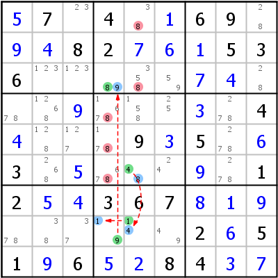

HoDoKu Lösungstechnik-Index: Beispiel für "XY-Chain"

Originales Sudoku:
.7.4..69...82...536................4....9.5..3.......12..367.........2.51.6..84..
Verwenden Sie die folgende Zeile um das Sudoku in HoDoKu zu laden:
:0702:8:+57.4.+169.+9+482+7+6+1536.....+7+4...+9...+3.4+4...9+35.+63.+5...+9.12+5+4367+8+1+9......2+651+96+5+284+3+7::815 835 844 854 864:
Die folgende Darstellung kann per Zwischenablage in die meisten Sudoku-Programme eingefügt werden:
.---------------.---------------.------------. | 5 7 23 | 4 38 1 | 6 9 28 | | 9 4 8 | 2 7 6 | 1 5 3 | | 6 123 123 | 89 358 59 | 7 4 28 | :---------------+---------------+------------: | 78 1268 9 | 1678 158 25 | 3 278 4 | | 4 128 127 | 178 9 3 | 5 278 6 | | 3 268 5 | 678 48 24 | 9 278 1 | :---------------+---------------+------------: | 2 5 4 | 3 6 7 | 8 1 9 | | 78 38 37 | 19 14 49 | 2 6 5 | | 1 9 6 | 5 2 8 | 4 3 7 | '---------------'---------------'------------'
Darstellung des Lösungsschrittes:
.---------------.-------------------.------------. | 5 7 23 | 4 3-8 1 | 6 9 28 | | 9 4 8 | 2 7 6 | 1 5 3 | | 6 123 123 | *89 35-8 59 | 7 4 28 | :---------------+-------------------+------------: | 78 1268 9 | 167-8 158 25 | 3 278 4 | | 4 128 127 | 17-8 9 3 | 5 278 6 | | 3 268 5 | 67-8 *48 24 | 9 278 1 | :---------------+-------------------+------------: | 2 5 4 | 3 6 7 | 8 1 9 | | 78 38 37 | *19 *14 49 | 2 6 5 | | 1 9 6 | 5 2 8 | 4 3 7 | '---------------'-------------------'------------' XY-Chain 8- r6c5 -4- r8c5 -1- r8c4 -9- r3c4 -8 => r13c5,r456c4<>8
Copyright © 2008-12 von Bernhard Hobiger
Zuletzt geändert am 5. Mai 2025 von shorty#3746
(basierend auf dem 1to9only Github-Repo)
Alles Material auf dieser Site unterliegt der GNU FDLv1.3.